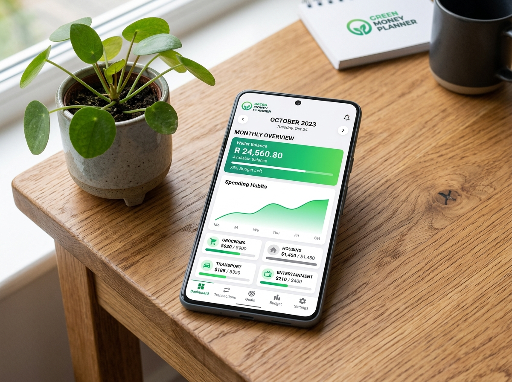
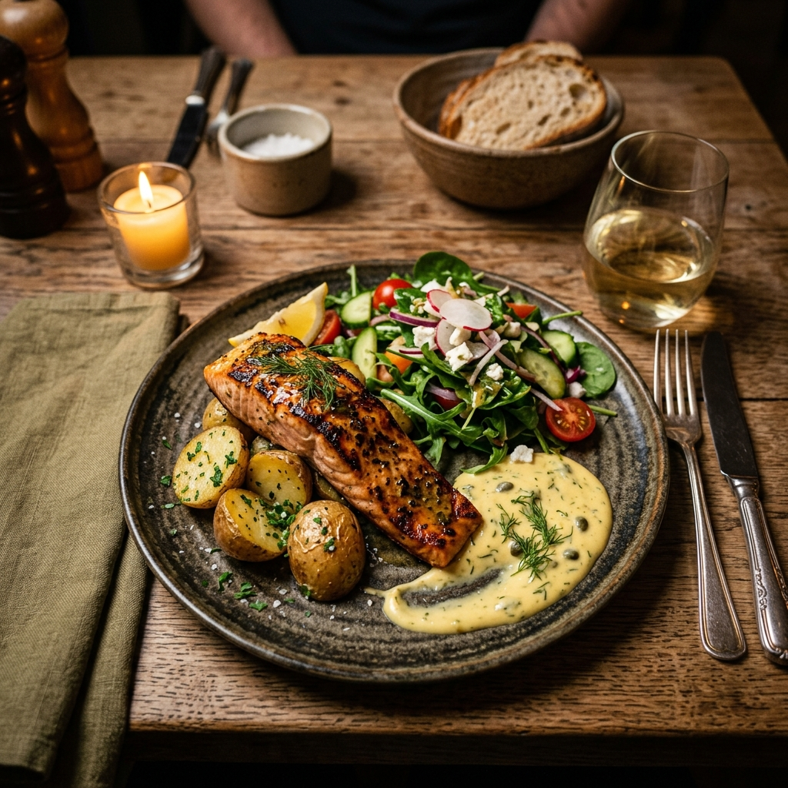
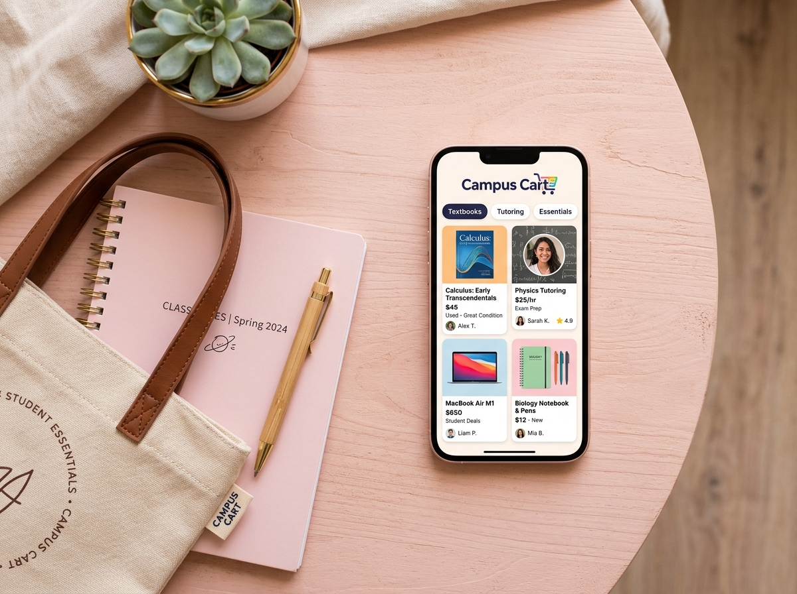
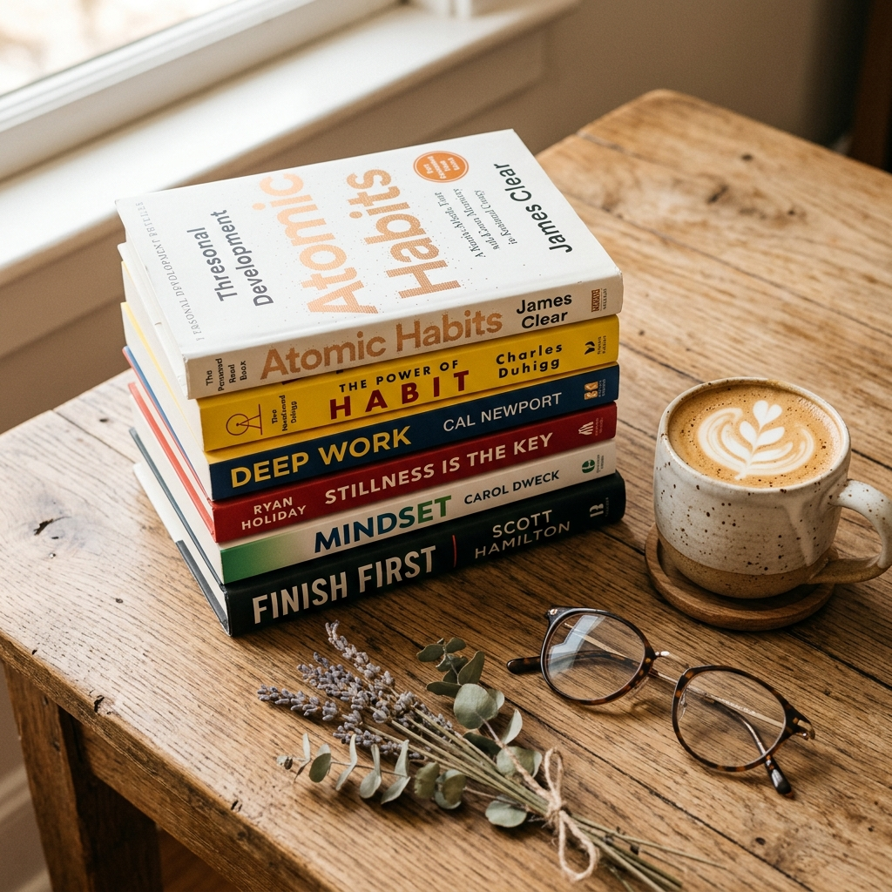

Brand & Creative Studio
ManagedbyHoma
Full-stack digital brand strategy and creative consultancy for boutique brands — editorial calendars, high-converting social campaigns, and client retention funnels.
Human Resource Management graduate and Corporate Communications specialist currently completing NYSC at FCMB Pensions Limited. Crafting workplace systems, high-converting brand stories, and digital growth strategies.
Bridging organizational psychology, corporate communications, and digital brand architecture. A career built on discretion, curiosity, and high-standard execution.
Studio portrait · Lifelong documentation in progress
B.Sc. in Human Resource Management from Elizade University. Practical experience managing candidate screening pipelines (50+ candidates), standard operating procedures, employee handbooks, and HRIS systems at Kodesh Skincare, Castel Resources, and Meridian Hospital.
NYSC placement at FCMB Pensions Limited (Strategy & Corporate Communications). Developing deep understanding of PenCom regulations, pension literacy campaigns, website content reviews, and digital academy launch initiatives.
Directing visual storytelling and high-converting campaigns across Instagram, TikTok, and Meta. Proven track record executing 7-day brand turnarounds (Dine with Shine Abuja), aesthetic skincare marketing (Kodesh & Xotic Queens), and email customer retention (Kivestores).
Founder of Green Money Planner™, crafting behavioral finance models that remove money shame. Ambition expanding into enterprise consulting, aviation flight operations, and timeless interior architecture.
Great organisations are built by people who feel seen, and brands that tell the truth beautifully.
Every project follows a rigorous, impact-driven methodology: Problem → What I Built → My Role → Progress → Results → What I Learned. Click any card to launch the complete case study and interactive tools.

A Nigeria-first financial wellness platform designed to help young professionals and students budget with intention, counter inflation anxiety, and develop sustainable savings discipline.
Full-stack digital brand strategy and creative consultancy for boutique brands — editorial calendars, high-converting social campaigns, and client retention funnels.

High-energy social campaign in Abuja combining viral culinary BTS reels, foodie engagement series, and SEO caption architecture that drove record table bookings.
B.Sc. HRM research examining training interval impact on employee productivity within the Niger Delta Development Commission using quantitative surveys.

Peer-to-peer campus delivery network and student convenience marketplace addressing night-time supply friction across university residential hostels.
A comprehensive, lifetime record spanning Strategy, Human Resource Management, Corporate Communications, and Digital Brand Growth. Click any organization card below to inspect full responsibilities, achievements, and case notes.
NYSC Corps Member – Strategy & Corporate Communications · Abuja, Nigeria. Corporate communication initiatives, PenCom regulatory literacy, content review for website, and Itual Academy project support.
Social Media Manager & Content Strategist · Executed high-converting 7-day brand review series, viral BTS reels, SEO captions, and culinary positioning that maximized foot-traffic conversion.
HR Manager & Social Media Manager · Port Harcourt. Recruited and screened 50+ candidates, created employee handbooks/SOPs, managed personnel files, and led digital client conversion campaigns.
Business & Administrative Support / Email Marketing · Handled customer correspondence, graphic design support, commercial operations, and customer retention email campaigns.
Industrial Training Student – HR Intern · Port Harcourt. Talent acquisition, payroll records, training session coordination, systematic HR archiving, and employee relations documentation.
HR & Administrative Intern · Port Harcourt. Candidate screening, HRIS and physical records management, confidential onboarding documentation, and hospital operational support.
Social Media Manager & Digital Content Assistant · Designed engaging reels and promo posts for product visibility, managed Instagram community growth, and maintained brand aesthetics.
A learning record that grows beyond a degree: academic research, empirical findings, professional coursework, and future study roadmaps.
Bachelor of Science (BSc) in Human Resource Management (HRM). Rigorous training in organizational design, talent systems, labor relations, and strategic personnel development.
Empirical investigation analyzing training and development in relation to employee performance at the Niger Delta Development Commission (NDDC).
Tracking target institutions, curriculum requirements, application milestones, and business school research.
A thoughtful personal corner that makes the portfolio feel human, authentic, and multi-dimensional. Click any passion below to view curations and reflections.

InquiryBooks on strategic psychology, financial behavior, mindset, and biographies of visionary builders.
Fascinated by spatial harmony, natural light, organic materials, and how physical environments elevate peace.
Long-term dream exploring flight operations, aviation logistics, and experiencing global airports.
Intentional aesthetics, timeless tailoring, muted tones, and carrying oneself with quiet confidence.
Good food, intentional hospitality, artisanal coffee, and meaningful conversations around the table.
Tennis, physical conditioning, and athletic discipline that sharpens executive mental stamina.
Updated regularly so colleagues, collaborators, and mentors know what matters most in my world today.
Structuring the financial wellness framework, wireframe user flows, and brand proposition.
Supporting corporate communications, website content, and pension educational initiatives.
Studying lifecycle nurture automations, copy architecture, and conversion mechanics.
Refining business advisory services, launching the MVP, and pursuing professional growth.
Search and browse the permanent archive of career milestones, ventures, and learning moments. Stored locally with search, category filtering, and backup export.
Two tailored, verified professional profiles reflecting distinct domains of excellence: Human Resource Management & Corporate Communications and Social Media Management, Content Creation & Email Marketing. Download the official verified PDFs or explore the interactive live reader.
HRM graduate (B.Sc. Elizade University) with active NYSC experience at FCMB Pensions Limited (Strategy & Corporate Communications), Kodesh Skincare & Spa (HR Manager), Castel Resources, and Meridian Hospital. Specializing in recruitment screening (50+ candidates), PenCom compliance awareness, and corporate communications.
Creative and results-driven strategist experienced in high-converting content, brand storytelling, and audience retention across Instagram, TikTok, and Meta platforms. Executed viral brand campaigns (Dine with Shine Abuja), skincare brand growth (Kodesh & Xotic Queens), and email marketing funnels (Kivestores).
For strategic collaborations, brand consulting, speaking opportunities, or a thoughtful hello, send a message below.
Whether you are building a new brand, refining an existing business model, or exploring meaningful collaborations, my inbox is open.